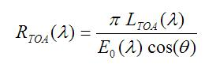

| MERIS Level 1 Preprocessor - Radiance-To-Reflectance Conversion Algorithm Specification |
|
The conversion from TOA radiance (LTOA) to TOA reflectances (RTOA) done by the following equation:

where E0 and θ are the solar spectral irradiance and the sun zenith angle, respectively. Currently, only MERIS Level 1b products are supported.